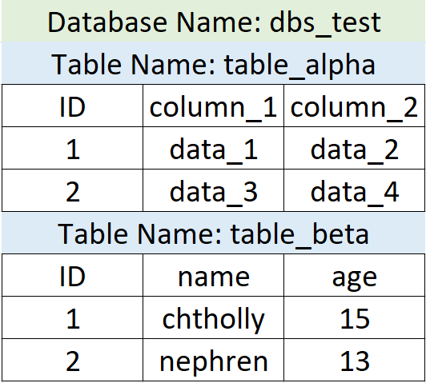

❅

❆
❄

❅
❆

❄
SQL Injection là một cách thức inject mã độc và có thể phá hủy cơ sở dữ liệu SQL qua URL, input web,...
Cho tới nay, SQL Injection đã là một lỗ hổng quá phổ biến. Cùng với sự phát triển của lĩnh vực an ninh mạng, việc một website bị dính lỗ hổng này là điều hiếm gặp. Tuy nhiên kể cả với những công ty lớn, SQL Injection là một lỗ hổng có thể xảy ra đi kèm với hậu quả rất lớn nếu hacker đủ tinh vi
Để có một cái nhìn rõ nhất về SQL Injection và hệ thống website (front end & back end), bạn đọc nên tự mình tạo những hệ thống website đơn giản (MySQL - PHP và MSSQL - ASP.NET)
Trong quá trình tìm hiểu, các bạn có thể tham khảo một số hướng dẫn ngoài lề ở chương cuối cùng của series này
Một số loại SQLI chính:
- Blind
- Boolean
- Union
- Error Exploit
Reference: SecurityIdiots
Có nhiều hệ thống database như MSSQL (hay SQL Server), MySQL, Oracle,... Trong đó MySQL là open source, free, và hay đi kèm với PHP, còn MSSQL thường phải trả phí và hay tích hợp với ASP
Một website có thể connect với nhiều database, và mỗi database chứa nhiều table, mỗi table chia thành nhiều cột và hàng. Dưới đây là ví dụ về một database
Có một số query cơ bản như:
select * from table_alpha (lấy toàn bộ data trong bảng table_alpha)
select column_1 from table_alpha (lấy toàn bộ data các hàng trong cột 1 bảng tương ứng)
select * from table_beta where age=15 (lấy các hàng trong bảng table_beta có giá trị cột age là 15)
...
Tiếp đến, như bao ngôn ngữ khác, SQL cũng có tính năng comment và có nhiều loại khác nhau như "--", "--+", "--+-",...
Để biết rõ và nhiều hơn về các truy vấn, các bạn có thể xem tại W3Schools
Để kết nối với cơ sở dữ liệu từ website, chúng ta cần các phương thức để liên kết chúng lại như PHP, ASP,...
Đối với MySQL, có thể xem tại W3Schools
Còn với MSSQL, các bạn có thể tham khảo các video trên youtube để hiểu rõ hơn
Để hiểu rõ hơn về database & cách sử dụng nó, các bạn có thể tự host website đi kèm với database thông qua localhost (LAMP với Linux hoặc XAMPP với Windows), hoặc các dịch vụ web hosting free cung cấp sẵn SQL system như 000webhost,...